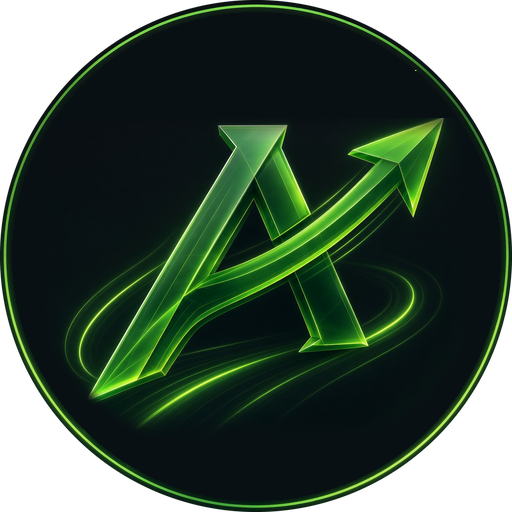

APEX Race ControlAPEX is software. You bring the computer, the screen and a supported lap counter. Timing correction works on every supported board.
| Lap counter | Notes |
|---|---|
| APEX lap counter 3.0 | Arduino Uno; hardware interrupt timestamps; 6 lanes + 5 start lights, or 8 lanes + 1; app loads the program over USB |
| Trackmate | Red, black and blue interfaces |
| Race Coordinator Arduino | Uno, Nano or Mega; club’s own pin wiring |
| Edition | Runs on |
|---|---|
| Home | Raspberry Pi 3B+, 4, 5 · Windows PC · Mac (Apple Silicon) |
| Club | Raspberry Pi 4 or 5 · Windows PC · Mac (Apple Silicon). Pi 3 stays Home even with a Club key |
APEX image for Raspberry Pi Imager starts straight into APEX. Windows and Mac builds are for testing ahead of the February 2027 launch — production downloads will be announced then.